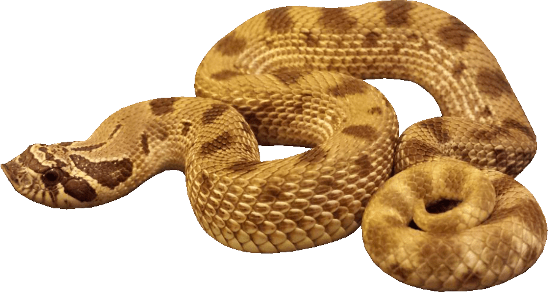

Ball Python

(Level: Beginner)
Ball pythons are one of the most popular pet snakes due to their small size, general shyness, and easy to manage.
As adults, these pythons have an average length of 3-5 feet. Most ball pythons are comfortable with a small enclosure
as it makes them feel secure. They can live in glass terrariums containing only substrate that need to be disinfected
once per month. Newspapers and paper towels are the most recommended substrates as they are cheap and easy to clean.
A heat source such as a heat pad or ceramic heat emitter should be provided on one side of the tank to allow the
python a place to bask. Your python should be provided with a basking spot temperature of 88-96°F. The temperature of
their tank can be monitored with a digital thermometer with a probe. Also use a hygrometer to make sure the humidity
is between 50-60%. Lights for their habitat should be on for 12 hours daily and turned off at night.
Ball pythons should be fed prey no bigger than their circumference. Hatchlings can start with rat pups and move up
to bigger rodents as they grow. These snakes can be fed both live and/or frozen/pre-killed rodents every 1-2 weeks.
If feeding live rodents to your python, be sure to monitor them in order to make sure they don't get injured. Do not
worry if your snake is refusing food as it is common for pythons to not eat during cooler times of the year or while going
through a shed cycle. Observe your snake's health and body weight if it is experiencing this behavior. Due to their shy
nature, pythons should not be handled until after you gain their trust and do not view you as a threat. When handling them,
always support their body and avoid fast movements to prevent injury or from getting bitten out of their fear. Be sure
to not handle them right before or after feeding them as they may not eat or regurgitate their food respectively.
A ball python that is properly cared for can live for
more than 30 years.
Western Hognose Snake
(Level: Intermediate)
The western hognose is a short snake found in the western plains of the U.S. and are well known for their hardened scale
at the front of the face which is used to burrow. It is recommended to use a wooden terrarium of atleast 40 gallons when
adults. The terrarium should have a basking spot with a temperature of around 90°F on one side while the opposite side
should have a temperature of 70°F. This can be achieved with a basking lamp controlled by a thermostat that is left on 10
hours daily. The temperature should be below 80°F at night. The habitat should also offer partial cover by using tall plants.
For western hognose snakes, a diet consisting of frozen rodents is recommended. If feeding live rodents to your snake, be sure
to monitor them in order to make sure they don't get injured. Hamsters and chicks can be used as an alternate food source if
they aren't accepting mice. These snakes should be fed only once every 2 weeks as they might become overweight if fed weekly.
A medium sized water bowl should be included in their habitat
in order to provide them with waterto drink and bathe in. Western
hognose snakes should not be handled when young as they tend to be shy as hatchlings.
Use a reptile friendly disinfectant to clean
their habitat every month to prevent your snake from getting sick. A healthy western hognose snake can live
for over 15 years.